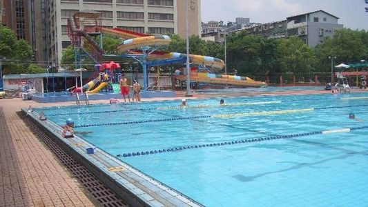
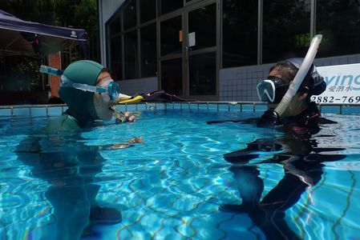
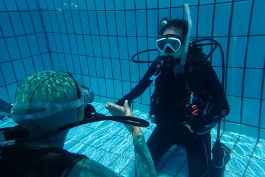
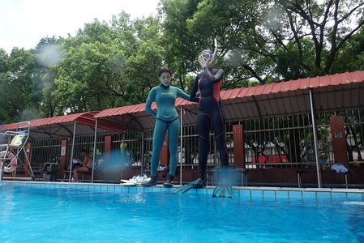
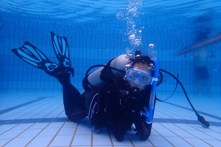

-
體驗潛水
體驗潛水
課程規劃
不用會游泳，不用有證照，體驗後立即報名 OWD(Open Water Diver 開放水域潛水員課程) 課程還可享特殊優惠！ iDiving 周末六日出動所有教練保障OWD訓練的安全，但是還在猶豫是否要學潛水的朋友，iDiving 知道你想了解更多的需求，我們特別在平日安排了水肺體驗活動。
想到泳池試試無重力的飄浮感嗎？請報名泳池體驗水肺 TRY SCUBA。
充滿冒險勇氣的你，想直接下海觀賞可愛的海洋生物嗎？請報名海洋體驗潛水TRY SCUBA DIVE。

開課日期
- 預約制, 不接受現場報名
- 5月~9月 每周二至周五, 每天上午下午兩時段
- 活動時間：上午 10:00 ~ 11:00 / 下午 14:00 ~ 15:00
超值學費
-
泳池體驗水肺 TRY SCUBA（會提供體驗的照片）：
兩米深水肺體驗 1,500 元，兩人同行價 2,500。
五米深水肺體驗 2,500 元，兩人同行價 4,500。 -
海洋體驗水肺 TRY SCUBA DIVE（會提供當天活動的影片）：
海底巡遊 3,000 元，兩人同行價 5,400 元，三人同行價 7,200 元。
如須搭車，台北到東北角車資 300 元/每人。
體驗完立即報名OWD課程，學費可折抵 1,000元。
學前須知
- 各種體驗課程之教學說明約30分鐘，實際下水體驗時間約30~40分鐘。
- 更改約定上課日期須在７天前告知。７天內更動或未告知而曠課，補課需額外負擔1000元，身體不適，出示醫院掛號收據者不收。
- 費用包含：教練費、訓練期間潛水裝備使用、體驗水肺之泳池場地費、保險。
- 費用不含：海洋公園門票（遇風浪因素而須進入海洋公園體驗潛水時）、餐飲與交通費用。
- 學員自行放棄課程，本訓練中心將不予退費。
- 訓練期間所提供之裝備若有穿戴不適或任何問題，請務必告知主持教練。
- 體驗潛水之交通須自理，或由iDiving協調共乘，台北到東北角車資 300 元/每人
- 體驗水肺泳池場地：２米深前港泳池或５米深南港、松山運動中心潛水池
- 海洋體驗潛水：東北角海域體驗潛水時，餐食自理，若協調至餐廳用餐則費用均攤。
-
水肺複習
水肺複習
 您是在渡假時快速取得執照嗎？還是取得執照後就沒有再潛水過呢？想到潛水還是會感到一些些恐懼嗎？沒關係！請參加 iDiving
為您準備的水肺複習班，將水肺潛水必備的技巧再次由專業教練帶著您一步步練習吧！
您是在渡假時快速取得執照嗎？還是取得執照後就沒有再潛水過呢？想到潛水還是會感到一些些恐懼嗎？沒關係！請參加 iDiving
為您準備的水肺複習班，將水肺潛水必備的技巧再次由專業教練帶著您一步步練習吧！
 
課程規劃
時 間 課 程 內 容 水肺複習 週末下午
2-3小時
視狀況調整裝備調整及組裝、蛙鞋踢動、面鏡排水、二級頭尋回與排水、
中性浮力、入水法、下潛＆上升、重裝脫著、緊急游泳上升
 
開課日期
「為 5~9 月每個周末皆可安排」，但請一周前填寫資料報名，以便安排。
超值學費
- 前港泳池（兩米）為 2,000 元 / 南港泳池（五米）為 2,500 元
包含泳池場地費、教練費、全套裝備使用！ 自備全部裝備者（鉛塊除外），費用可減免 500 元 參加 iDiving 出團活動者，費用減半！
 
學前須知
- 學員自行放棄課程，本訓練中心將不予退費。
- 學員在學期間購買潛水器材享有會員優惠價。
- 訓練期間所提供之裝備若有穿戴不適或任何問題，請務必告知主持教練。